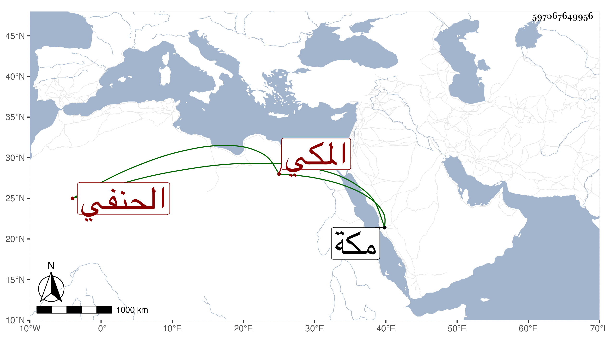

0902Sakhawi.DawLamic.ITO20230111-ara1.EIS1600.597067649956
Biography ID: 597067649956
191
أبو بكر بن محمد بن أحمد بن محمد بن محمد بن سعيد الفخر بن الرضى أبي حامد بن الشهاب بن الضياء المكي الحنفي أخو أبي الليث محمد الماضي لأبيه فأم هذا أخت القاضي عبد القادر بن أبي العباس المالكي . ولد في جمادى الأولى سنة إحدى وأربعين بمكة ونشأ بها وتعب أخوه ثم ولده معه لعدم صلاحيته .
